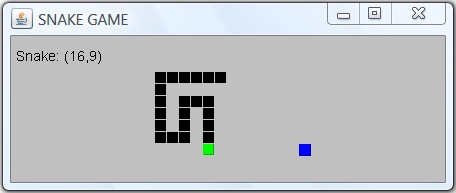
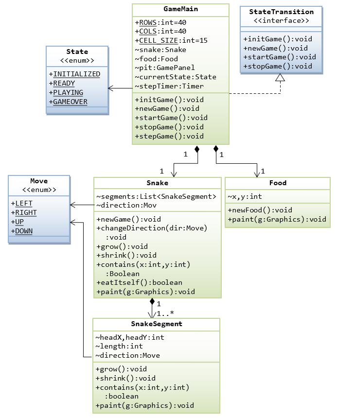
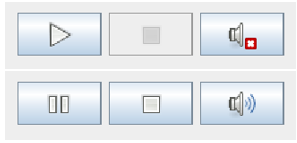

Instead of writing games in an ad-hoc manner (which I did but found it grossly inefficient), I decided to put up a framework for programming games in Java. This is because many of the tasks involved in game programming are similar in many types of games. A framework not only helps in improving the productivity but also ensures high quality codes. Before presenting the entire framework, let's look at the individual pieces involved in game programming.
Game States
Game State Diagram

Most of the games follow the above state transition:
initGame(): Perform one-time initialization tasks, such as constructing object, opening files, setup timers and key/mouse event handlers.newGame(): Perform per-game initialization tasks, such as reset the score, clear the game board, etc.startGame(): Start all the timers.stopGame(): Stop timers, update game statistics such as high score.destroyGame(): housekeeping tasks before program exit.stepGame(): 2 kinds of triggers: user action such as key-press or button-push and/or timer.pauseGame()/resumeGame(): suspend/resume the timers.
NOTES
- To perform custom painting, use a
JPaneland override itspaintComponent(Graphics), which is called back viarepaint(). - All TextField/Label shall immediately update its display, whenever its value changes, via
component.setText().
In Java, we can support this state diagram with the following entities.
Enumeration State
package mygame;
public enum State {
INITIALIZED, READY, PLAYING, PAUSE, GAMEOVER, DESTROYED
}Variable currentState
In the main logic class, a variable called currentState shall be used to keep track of the current state:
State currentState; // typically package-visibleInterface StateTransition
package mygame;
public interface StateTransition {
/**
* Perform one-time initialization tasks, such as constructing game objects,
* opening files, setting up the timers, audio and images, and setting up
* the key/mouse event handlers.
*/
default void initGame() { }
/**
* Perform per-game initialization tasks for a new game, such as
* resetting the score and all the game properties, clear the board, etc.
*/
default void newGame() { }
/**
* Start the game, e.g., start the timers
*/
default void startGame() { }
/**
* Stop the game (game over), stop the timers and update game statistics
* such as high score.
*/
default void stopGame() { }
/**
* Run one step of the game, either due to user action (via key/mouse) or timer task.
* Hard to define here as it may have different parameters and return type.
*/
// default Xxx stepGame(Aaa) { }
/**
* Pause the game, e.g., pause the timers
*/
default void pauseGame() { }
/**
* Resume the paused game, e.g., resume the timers
*/
default void resumeGame() { }
/**
* Perform housekeeping tasks such as closing the files before exiting.
*/
default void destroyGame() { }
}We define an interface called StateTransition to bind these methods. You shall check the currentState (refer to the state diagram) before running these methods, e.g.,
@Override
public void newGame() {
if (currentState != State.GAMEOVER && currentState != State.INITIALIZED)
throw new IllegalStateException("Cannot run newGame() in state " + currentState);
......
currentState = State.READY;
repaint(); // always refresh the display
}The stepGame(xxx): Key/Mouse and Timer
There are 2 kinds of actions that trigger stepGame(xxx):
- User action such as key-press or mouse-click. The key-event or mouse-event handler shall trigger
stepGame(xxx)with proper parameters. Checkjava.awt.event.KeyListener/KeyAdapter/MouseListener/MouseAdapterinterfaces and adapter classes. - Timers: It is handy to set up a
javax.swing.Timerto fire a repetitive task with an initial delay and between-event delay.
This timer also runs on the Event Dispatcher Thread (EDT), same as key/mouse event handlers.// Constructor Timer(int delay, ActionListener listener) // Creates a Timer and initializes both the initial delay and between-event delay to // delay milliseconds. // Methods void start() // start the timer void stop() // stop the timer void restart() // restart the timer, canceling any pending firings and // causing it to fire with its initial delay. void setDelay(int delay) // set between-event delay void setInitialDelay(int initialDelay) boolean isRunning()
Main Game Class GameMain
package mygame;
import java.awt.*;
import java.awt.event.*;
import javax.swing.*;
/** The main logic and display class */
public class GameMain extends JPanel implements StateTransition {
private static final long serialVersionUID = 1L;
// == Define named constants ==
public static final String TITLE = "Title"; // title of the app
public static final int BOARD_WIDTH = 800; // width and height of the game board
public static final int BOARD_HEIGHT = 600;
// ......
// == Define game objects (package-visible) ==
State currentState;
int score = 0;
Timer stepTimer;
int delay = 1000; // msec
// ......
// Custom drawing panel
GamePanel gamePanel;
// Constructor to initialize the UI components and game objects
public GameMain() {
// Set up UI components
initGUI();
// Perform one-time initialization tasks
initGame();
// Reset all properties for a new game
newGame();
}
/** Helper method to initialize UI components */
private void initGUI() {
gamePanel = new GamePanel();
gamePanel.setLayout(new BorderLayout());
gamePanel.setPreferredSize(new Dimension(BOARD_WIDTH, BOARD_HEIGHT));
gamePanel.setFocusable(true); // needed to receive key-events
gamePanel.requestFocus();
super.add(gamePanel, BorderLayout.CENTER); // GameMain super JPanel
// Other UI components such as button controls, score board, etc.
// ......
}
/** Perform one-time initialization tasks. */
@Override
public void initGame() {
// Setup timer
stepTimer = new Timer(delay, evt -> stepGame(xxx));
// Set up key event handler
gamePanel.addKeyListener(new KeyAdapter() {
@Override
public void keyPressed(KeyEvent evt) {
int key = evt.getKeyCode();
if (currentState == State.READY) {
// Any keys to start the game
startGame();
} else if (currentState == State.PLAYING) {
// Call stepGame(xxx) with proper parameter
switch (key) {
case KeyEvent.VK_UP:
// ......
break;
case KeyEvent.VK_DOWN:
// ......
break;
case KeyEvent.VK_LEFT:
// ......
break;
case KeyEvent.VK_RIGHT:
// ......
break;
}
} else if (currentState == State.GAMEOVER) {
// Any keys to re-start the game
newGame();
startGame();
}
}
});
currentState = State.INITIALIZED;
}
/** Perform one-time initialization tasks. */
@Override
public void newGame() {
if (currentState != State.GAMEOVER && currentState != State.INITIALIZED)
throw new IllegalStateException("Cannot run newGame() in state " + currentState);
// reset all the game properties
score = 0;
// ....
currentState = State.READY;
repaint();
}
/** Start the game */
@Override
public void startGame() {
if (currentState != State.READY)
throw new IllegalStateException("Cannot run startGame() in state " + currentState);
stepTimer.start();
// ......
currentState = State.PLAYING;
repaint();
}
/** Stop the game */
@Override
public void stopGame() {
if (currentState != State.PLAYING)
throw new IllegalStateException("Cannot run stopGame() in state " + currentState);
stepTimer.stop();
// ......
currentState = State.GAMEOVER;
repaint();
}
/** Run one step of the game. Need to decide on parameters and return type */
public void stepGame(int xxx) {
if (currentState != State.PLAYING)
throw new IllegalStateException("Cannot run stepGame() in state " + currentState);
// ......
repaint();
}
// Other methods
// ......
// Custom drawing panel, implemented as an inner class to access outer class.
class GamePanel extends JPanel {
private static final long serialVersionUID = 1L;
/** Constructor */
public GamePanel() {
// ......
}
/** Override paintComponent to do custom drawing. Called back by repaint(). */
@Override
public void paintComponent(Graphics g) {
Graphics2D g2d = (Graphics2D)g; // if using Java 2D
super.paintComponent(g2d); // paint background
setBackground(Color.BLACK); // may use an image for background
// Draw the game objects using g or g2d
// ......
}
}
/** The entry main method */
public static void main(String[] args) {
// Use the event dispatch thread to build the UI for thread-safety.
SwingUtilities.invokeLater(new Runnable() {
@Override
public void run() {
JFrame frame = new JFrame(TITLE);
frame.setContentPane(new GameMain()); // GameMain JPanel as content pane
frame.setDefaultCloseOperation(JFrame.EXIT_ON_CLOSE);
frame.pack();
frame.setLocationRelativeTo(null); // center the application window
frame.setVisible(true); // show it
}
});
}
}The GameMain class implements StateTransition interface, and overrides the state transition methods such as initGame(), newGame(), startGame(), stopGame() and stepGame().
The custom drawing is carried out via an inner class GamePanel by overriding paintComponent(Graphics), which is called back via repaint() in the JPanel or JFrame.
Case Study 1: The Snake Game (Part I)
Let's design a simple snake game based on this framework.
Rule of the Game
- The snake starts at the center of the pit, faces up, and moves at constant speed.
- There is always one food in the pit. Food appears at random location, and persists for a random period.
- The snake grows by one cell after eating a food.
- The snake dies by either (a) running into the edge of the pit, or (b) running into its own tail.
- The final score is based on the number of food eaten.
Class Diagram
A Snake is made up of one or more horizontal or vertical SnakeSegments. A Pit contains one Snake and one piece of Food. An enumeration called Direction is defined as a static nested class of Snake for the four moving directions: UP, DOWN, LEFT and RIGHT.
Enumeration Move
We define an enum called Move to represent the movement direction of the snake.
package snake;
/**
* The Move enumeration defines the 4 movement directions
*/
public enum Move {
UP, DOWN, LEFT, RIGHT
}Interface StateTransition
Same as above.
Class SnakeSegment
A snake is made up of horizontal and vertical segments. Each segment has its head at (headX, headY), a length, and a movement direction. Segment can grow (at the head) and shrink (at the tail) by one cell. It can draw itself. It has a method called contains(int x, int y) for collision detection.
package snake;
import java.awt.Graphics;
/**
* SnakeSegment represents one horizontal or vertical segment of a snake. The "head" of
* this segment is at (headX, headY). The segment is drawn starting from the "head"
* and proceeding "length" cells in "direction", until it reaches the "tail".
*/
public class SnakeSegment {
// == Define named constants ==
/** Size of each body cell in pixels */
public static final int CELL_SIZE = GameMain.CELL_SIZE;
// == Define properties (package access) ==
/** (x, y) of this segment head */
int headX, headY;
/** length of this segment */
int length;
/** Movement direction of this segment */
Move direction;
/**
* Construct a new snake segment at given (headX, headY), length and direction.
*/
public SnakeSegment(int headX, int headY, int length, Move direction) {
this.headX = headX;
this.headY = headY;
this.direction = direction;
this.length = length;
}
/**
* Grow by adding one cell in front of the head of this segment.
*/
public void grow() {
length++;
// Need to adjust the headX or headY
switch (direction) {
case LEFT: headX--; break;
case RIGHT: headX++; break;
case UP: headY--; break;
case DOWN: headY++; break;
}
}
/**
* Shrink by removing one cell from the tail of this segment.
*/
public void shrink() {
length--;
// no change in headX and headY needed
}
// Helper method to get the tail x.
private int getTailX() {
if (direction == Move.LEFT) {
return headX + length - 1;
} else if (direction == Move.RIGHT) {
return headX - length + 1;
} else { // UP or DOWN
return headX;
}
}
// Helper method to get the tail y.
private int getTailY() {
if (direction == Move.DOWN) {
return headY - length + 1;
} else if (direction == Move.UP) {
return headY + length - 1;
} else { // LEFT or RIGHT
return headY;
}
}
/**
* Returns true if the snake segment contains the given cell.
* Used for collision detection.
*/
public boolean contains(int x, int y) {
switch (direction) {
case LEFT: return ((y == headY) && ((x >= headX) && (x <= getTailX())));
case RIGHT: return ((y == headY) && ((x <= headX) && (x >= getTailX())));
case UP: return ((x == headX) && ((y >= headY) && (y <= getTailY())));
case DOWN: return ((x == headX) && ((y <= headY) && (y >= getTailY())));
default: return false; // prevent syntax error
}
}
/**
* Paint itself via the Graphics object.
* Since SnakeSegments are encapsulated in Snake, snakeSegment.paint(Graphics)
* shall be called in snake.paint(Graphics).
*/
public void paint(Graphics g) {
int x = headX, y = headY;
switch (direction) {
case LEFT:
for (int i = 0; i < length; i++) {
g.fill3DRect(x*CELL_SIZE, y*CELL_SIZE, CELL_SIZE-1, CELL_SIZE-1, true);
// width/height minus-1 for better looking adjacent raised rectangles
x++;
}
break;
case RIGHT:
for (int i = 0; i < length; i++) {
g.fill3DRect(x*CELL_SIZE, y*CELL_SIZE, CELL_SIZE-1, CELL_SIZE-1, true);
x--;
}
break;
case UP:
for (int i = 0; i < length; i++) {
g.fill3DRect(x*CELL_SIZE, y*CELL_SIZE, CELL_SIZE-1, CELL_SIZE-1, true);
y++;
}
break;
case DOWN:
for (int i = 0; i < length; i++) {
g.fill3DRect(x*CELL_SIZE, y*CELL_SIZE, CELL_SIZE-1, CELL_SIZE-1, true);
y--;
}
break;
}
}
}Class Snake
Next, the Snake class is designed to maintain a list of SnakeSegments.
When the snake moves forward, the head segment grows by one cell. The tail segment shrinks by one cell if no food is eaten; but no change if food is eaten. No change for the intermediate segments.
package snake;
import java.awt.Color;
import java.awt.Graphics;
import java.util.ArrayList;
import java.util.List;
/**
* A Snake is made up of one or more SnakeSegments.
* This class implements GameState interface but only overrides the
* newGame(). See game state diagram.
*
* When the snake moves forward:
* - The head segment grows by one cell.
* - If no food is eaten, the tail segment shrink by one cell; otherwise
* no change.
* - No change for the intermediate segments.
*/
public class Snake implements StateTransition {
// == Define named constants ==
/** Initial Length of the snake */
private static final int INIT_LENGTH = 12;
/** Size of each body cell in pixels */
public static final int CELL_SIZE = GameMain.CELL_SIZE;
public static final Color COLOR_HEAD = Color.RED; // color for the snake's head
public static final Color COLOR_BODY = Color.PINK; // color for the snake's body
// == Define the snake properties (package-visible) ==
// The snake segments that forms the snake
List<SnakeSegment> segments = new ArrayList<SnakeSegment>();
// The current moving direction of this snake
Move direction;
/** Default Constructor */
public Snake() { }
/**
* Regenerate the snake for a new game.
*/
@Override
public void newGame() {
segments.clear();
// Create a snake at the center of the pit, facing up.
int headX = GameMain.COLS / 2;
int headY = GameMain.ROWS / 2;
int length = INIT_LENGTH;
direction = Move.UP;
segments.add(new SnakeSegment(headX, headY, length, direction));
}
/**
* Change the direction of the snake, but no 180 degree turn allowed.
*/
public void changeDirection(Move newDir) {
// No 180 degree turn
if ((newDir != direction) &&
((newDir == Move.UP && direction != Move.DOWN)
|| (newDir == Move.DOWN && direction != Move.UP)
|| (newDir == Move.LEFT && direction != Move.RIGHT)
|| (newDir == Move.RIGHT && direction != Move.LEFT))) {
SnakeSegment headSegment = segments.get(0); // get the head segment
int x = headSegment.headX;
int y = headSegment.headY;
// Insert a new segment with zero length as the new head segment
segments.add(0, new SnakeSegment(x, y, 0, newDir));
direction = newDir;
}
}
/**
* Growing the head segment by one cell.
*/
public void grow() {
// Grow the head segment
SnakeSegment headSegment = segments.get(0); // "head" segment
headSegment.grow();
}
/**
* Shrink the tail segment by one cell (not eaten food)
*/
public void shrink() {
SnakeSegment tailSegment;
tailSegment = segments.get(segments.size() - 1);
tailSegment.shrink();
if (tailSegment.length == 0) {
segments.remove(tailSegment);
}
}
/**
* Get the X coordinate of the cell that contains the head of this snake segment.
*
* @return x of the snake head
*/
public int getHeadX() {
return segments.get(0).headX;
}
/**
* Get the Y coordinate of the cell that contains the head of this snake segment.
*
* @return y of the snake head
*/
public int getHeadY() {
return segments.get(0).headY;
}
/**
* Get the length of this snake by adding up all the segments.
*
* @return the length of this snake
*/
public int getLength() {
int length = 0;
for (SnakeSegment segment : segments) {
length += segment.length;
}
return length;
}
/**
* Check if this snake contains the given (x, y) cell. Used in collision
* detection
*
* @return true if this snake contains the given (x, y)
*/
public boolean contains(int x, int y) {
for (int i = 0; i < segments.size(); i++) {
SnakeSegment segment = segments.get(i);
if (segment.contains(x, y)) {
return true;
}
}
return false;
}
/**
* Check if the snake eats itself.
*
* @return true if the snake eats itself
*/
public boolean eatItself() {
int headX = getHeadX();
int headY = getHeadY();
// eat itself if the (headX, headY) hits its body segment (4th onwards)
for (int i = 3; i < segments.size(); i++) {
SnakeSegment segment = segments.get(i);
if (segment.contains(headX, headY)) {
return true;
}
}
return false;
}
/**
* Paint itself via the Graphics context.
* The JPanel's repaint() in GameMain class callbacks paintComponent(Graphics)
* This snake.paint(Graphics) shall be placed in paintComponent(Graphics).
* @param g - the drawing Graphics object
*/
public void paint(Graphics g) {
g.setColor(COLOR_BODY);
for (int i = 0; i < segments.size(); i++) {
segments.get(i).paint(g); // draw all the segments
}
// Paint over the head again using a different head color and bigger
int offset = 2;
if (segments.size() > 0) {
g.setColor(COLOR_HEAD);
g.fill3DRect(getHeadX()*CELL_SIZE-offset/2, getHeadY()*CELL_SIZE-offset/2,
CELL_SIZE-1+offset, CELL_SIZE-1+offset, true);
}
}
}Class Food
Next, the Food class, which is rather straight forward.
package snake;
import java.awt.Color;
import java.awt.Graphics;
import java.util.Random;
/**
* The Food class models a food item that the snake can eat.
* It is placed randomly in the pit.
*/
public class Food {
// == Define named constants ==
private static final Color COLOR_FOOD = new Color(76, 181, 245); // Blue #4CB5F5
// == Define properties (package access) ==
/** current food location (x, y) in the pit (in cells) */
int x, y;
/** Food items eaten count */
int foodEaten = -1;
private static Random rand = new Random();
/**
* Regenerate a food item. Randomly place inside the pit (slightly off the edge).
*/
public void newFood() {
x = rand.nextInt(GameMain.COLS - 4) + 2;
y = rand.nextInt(GameMain.ROWS - 4) + 2;
++foodEaten; // one more food eaten
}
/**
* Paint itself via the Graphics context.
* The repaint() in GameMain class callbacks paintComponent(Graphics)
* This snake.paint(Graphics) shall be placed in paintComponent(Graphics).
*
* @param g - the drawing Graphics object
*/
public void paint(Graphics g) {
g.setColor(COLOR_FOOD);
// Slightly bigger than the cell
int offset = 4;
g.fill3DRect(x * GameMain.CELL_SIZE - offset/2,
y * GameMain.CELL_SIZE - offset/2,
GameMain.CELL_SIZE + offset, GameMain.CELL_SIZE + offset, true);
}
}Class GameMain
Finally, it is the main class GameMain, based on the game state diagram.
package snake;
import java.awt.Color;
import java.awt.Dimension;
import java.awt.Font;
import java.awt.Graphics;
import java.awt.event.KeyAdapter;
import java.awt.event.KeyEvent;
import javax.swing.JFrame;
import javax.swing.JPanel;
import javax.swing.SwingUtilities;
import javax.swing.Timer;
/**
* Main Game Logic and Display
*/
public class GameMain extends JPanel implements StateTransition {
private static final long serialVersionUID = 1L;
// == Define named constants for the game ==
/** Number of rows of the game board (in cells) */
public static final int ROWS = 40;
/** Number of columns of the game board (in cells) */
public static final int COLS = 40;
/** Size of the body cell (in pixels) */
public static final int CELL_SIZE = 15;
/** App title */
public static final String TITLE = "Snake";
/** Width (in pixels) of the game board */
public static final int PIT_WIDTH = COLS * CELL_SIZE;
/** Height (in pixels) of the game board */
public static final int PIT_HEIGHT = ROWS * CELL_SIZE;
public static final Color COLOR_PIT = Color.DARK_GRAY;
public static final Color COLOR_GAMEOVER = Color.RED;
public static final Font FONT_GAMEOVER = new Font("Verdana", Font.BOLD, 30);
public static final Color COLOR_INSTRUCTION = Color.RED;
public static final Font FONT_INSTRUCTION = new Font("Dialog", Font.PLAIN, 26);
public static final Color COLOR_DATA = Color.WHITE;
public static final Font FONT_DATA = new Font(Font.MONOSPACED, Font.PLAIN, 16);
// == Define game objects ==
private Snake snake;
private Food food;
private GamePanel pit;
/** Current state of the game */
private State currentState;
/** Game step timer */
private Timer stepTimer;
/** Number of game steps per second */
public static final int STEPS_PER_SEC = 6;
/** Step in mini-seconds */
public static final int STEP_IN_MSEC = 1000 / STEPS_PER_SEC;
/**
* Constructor to initialize the UI components and game objects
*/
public GameMain() {
// Set up UI components
initGUI();
// Perform one-time initialization tasks
initGame();
// Reset all properties for a new game
newGame();
}
/**
* Helper method to create (init) UI components, called in constructor.
*/
public void initGUI() {
pit = new GamePanel();
pit.setPreferredSize(new Dimension(PIT_WIDTH, PIT_HEIGHT));
pit.setFocusable(true); // to receive key-events
pit.requestFocus();
super.add(pit); // JPanel.add()
}
/**
* Perform one-time initialization tasks. See game state diagram.
* Initialize all the game objects, run only once in the constructor
* of the main class.
*/
@Override
public void initGame() {
// Allocate a new snake and a food item.
snake = new Snake();
food = new Food();
// Set up a Swing's timer to repeatedly schedule a task
// on the event dispatching thread (KeyEvent also run on EDT).
stepTimer = new Timer(STEP_IN_MSEC, e -> stepGame());
// Set up key event handler
pit.addKeyListener(new KeyAdapter() {
@Override
public void keyPressed(KeyEvent evt) {
int key = evt.getKeyCode();
if (currentState == State.READY) {
// Any keys to start the game
startGame();
} else if (currentState == State.PLAYING) {
switch (key) {
case KeyEvent.VK_UP:
snake.changeDirection(Move.UP); break;
case KeyEvent.VK_DOWN:
snake.changeDirection(Move.DOWN); break;
case KeyEvent.VK_LEFT:
snake.changeDirection(Move.LEFT); break;
case KeyEvent.VK_RIGHT:
snake.changeDirection(Move.RIGHT); break;
}
} else if (currentState == State.GAMEOVER) {
// Any keys to re-start the game
newGame();
startGame();
}
}
});
currentState = State.INITIALIZED;
}
/**
* Perform per-game initialization tasks. See game state diagram.
* Reset all game properties for a new game.
*/
@Override
public void newGame() {
if (currentState != State.GAMEOVER && currentState != State.INITIALIZED)
throw new IllegalStateException("Cannot run newGame() in state " + currentState);
// Get a new snake
snake.newGame();
// Get a new food, which does not fall on the snake body
do {
food.newFood();
} while (snake.contains(food.x, food.y));
food.foodEaten = 0;
currentState = State.READY;
repaint();
}
/**
* To start and re-start a new game.
*/
@Override
public void startGame() {
if (currentState != State.READY)
throw new IllegalStateException("Cannot run startGame() in state " + currentState);
// Start the step timer, which fires an event at constant rate.
stepTimer.start();
currentState = State.PLAYING;
repaint();
}
/**
* To stop the game, e.g., game over.
*/
@Override
public void stopGame() {
if (currentState != State.PLAYING)
throw new IllegalStateException("Cannot run stopGame() in state " + currentState);
stepTimer.stop();
currentState = State.GAMEOVER;
repaint();
}
/**
* Run one step of the game. Fire by the step timer at constant rate.
*/
public void stepGame() {
if (currentState != State.PLAYING)
throw new IllegalStateException("Cannot run stepGame() in state " + currentState);
// Snake runs a step
snake.grow(); // grow the head segment by one cell
// check if this snake eats the food item
int headX = snake.getHeadX();
int headY = snake.getHeadY();
if (headX == food.x && headY == food.y) {
// food eaten, regenerate one (which does not fall on the snake body)
do {
food.newFood();
} while (snake.contains(food.x, food.y));
} else {
// not eaten, shrink the tail segment by one cell
snake.shrink();
}
// Check if the snake moves out of the pit
if (!pit.contains(headX, headY)) {
stopGame(); // gameover
return;
}
// Check if the snake eats itself
if (snake.eatItself()) {
stopGame(); // gameover
return;
}
repaint();
}
/**
* Custom drawing panel for the game pit, written as an inner class.
*
*/
private class GamePanel extends JPanel {
private static final long serialVersionUID = 1L;
/**
* Override paintComponent() to do custom drawing.
* Called back via repaint().
*
* @param g - The Graphics drawing object
*/
@Override
public void paintComponent(Graphics g) {
super.paintComponent(g); // paint background
setBackground(COLOR_PIT); // may use an image for background
// Draw the game objects
snake.paint(g);
food.paint(g);
// Print game data
g.setFont(FONT_DATA);
g.setColor(COLOR_DATA);
g.drawString("Snake Head: (" + snake.getHeadX() + "," + snake.getHeadY() + ")", 10, 25);
g.drawString("Snake Length: " + snake.getLength(), 10, 45);
g.drawString("Food: (" + food.x + "," + food.y + ")", 10, 65);
g.drawString("Eaten: " + food.foodEaten, 10, 85);
// READY state
if (currentState == State.READY) {
g.setFont(FONT_INSTRUCTION);
g.setColor(COLOR_INSTRUCTION);
g.drawString("Push any key to start the game ...", 100, PIT_HEIGHT / 4);
}
// GAMEOVER state
if (currentState == State.GAMEOVER) {
g.setFont(FONT_GAMEOVER);
g.setColor(COLOR_GAMEOVER);
g.drawString("GAME OVER!", 200, PIT_HEIGHT / 2);
g.setFont(FONT_INSTRUCTION);
g.drawString("Push any key to start the game ...", 120, PIT_HEIGHT / 2 + 40);
}
}
// Check if this pit contains the given (x, y), for collision detection
public boolean contains(int x, int y) {
if ((x < 0) || (x >= ROWS)) {
return false;
}
if ((y < 0) || (y >= COLS)) {
return false;
}
return true;
}
}
/**
* The entry main method
*/
public static void main(String[] args) {
// Use the event-dispatcher thread to build the UI for thread-safety.
SwingUtilities.invokeLater(new Runnable() {
@Override
public void run() {
GameMain main = new GameMain();
JFrame frame = new JFrame(TITLE);
frame.setContentPane(main); // main JPanel as content pane
frame.setDefaultCloseOperation(JFrame.EXIT_ON_CLOSE);
frame.pack();
frame.setLocationRelativeTo(null); // center the application window
frame.setVisible(true); // show it
}
});
}
}Notes:
- [TODO]
Snake Game Part II - Control, Menu Bar, Sound and Image
Let zest up the snake game by adding a control panel, menubar, sound effects, and score board.
Control Panel
The icons are downloaded from the open-source "Tango desktop project @ http://tango.freedesktop.org". For the "mute" button, two image-icons are required (mute and volume-on). You need to enable/disable the button accordingly, and transfer the focus to the drawing panel, after a button is pushed.
package snake;
import java.awt.GridLayout;
import java.awt.event.ActionEvent;
import java.awt.event.ActionListener;
import javax.swing.ImageIcon;
import javax.swing.JButton;
import javax.swing.JPanel;
/**
* The Game Control Panel with Start/Pause, Stop and Mute buttons, with
* logic and display.
* The GameMain class creates an instance of this class.
* This class need a reference to GameMain to call GameMain's
* methods such as newGame() and startGame().
*/
public class Controls extends JPanel implements StateTransition {
private static final long serialVersionUID = 1L;
// Need to reference the GameMain class
private GameMain main;
// == Define UI components ==
private JButton btnStartPause;
private JButton btnStop;
private JButton btnMute;
// Load ImageIcon for the JButton
// For Eclipse, place the audio file under "src", which will be copied
// into "bin".
private ImageIcon iconStart = new ImageIcon( // START
getClass().getClassLoader().getResource("images/media-playback-start.png"), "START");
private ImageIcon iconPause = new ImageIcon( // PAUSE
getClass().getClassLoader().getResource("images/media-playback-pause.png"), "PAUSE");
private ImageIcon iconStop = new ImageIcon( // STOP
getClass().getClassLoader().getResource("images/media-playback-stop.png"), "STOP");
private ImageIcon iconSound = new ImageIcon( // SOUND ON
getClass().getClassLoader().getResource("images/audio-volume-high.png"), "SOUND ON");
private ImageIcon iconMute = new ImageIcon( // MUTED
getClass().getClassLoader().getResource("images/audio-volume-muted.png"), "MUTED");
/**
* Constructor - Initialize GUI and game objects
* @param main - needed to reference the GameMain's members
*/
public Controls(GameMain main) {
this.main = main;
initGUI();
initGame();
}
/**
* Helper method to initialize GUI component. Called in constructor.
*/
public void initGUI() {
super.setLayout(new GridLayout(1, 3, 20, 20)); // super JPanel
// 3 JButtons: Start/Pause, Stop and Sound/Mute
btnStartPause = new JButton(iconStart);
super.add(btnStartPause);
btnStop = new JButton(iconStop);
super.add(btnStop);
btnMute = new JButton(iconMute);
super.add(btnMute);
}
/**
* Perform one-time initialization tasks.
*/
@Override
public void initGame() {
btnStartPause.addActionListener(new ActionListener() {
public void actionPerformed(ActionEvent evt) {
switch (main.currentState) {
case READY:
main.startGame(); break;
case GAMEOVER:
main.newGame();
main.startGame();
break;
case PLAYING:
main.pauseGame(); break;
case PAUSE:
main.resumeGame(); break;
default:
}
// Return the focus to the canvas to process KeyEvent
main.pit.requestFocus();
}
});
btnStop.addActionListener(new ActionListener() {
public void actionPerformed(ActionEvent evt) {
if (main.currentState == State.PLAYING || main.currentState == State.PAUSE) {
main.stopGame();
}
}
});
btnMute.addActionListener(new ActionListener() {
public void actionPerformed(ActionEvent evt) {
if (SoundEffect.volume == SoundEffect.Volume.MUTE) {
btnMute.setIcon(iconSound);
SoundEffect.volume = SoundEffect.Volume.LOW;
} else {
btnMute.setIcon(iconMute);
SoundEffect.volume = SoundEffect.Volume.MUTE;
}
main.pit.requestFocus();
}
});
}
/*
* These state transition methods are called by GameMain to
* update this control.
* These methods might trigger from the above button actions or
* non-button action such as gameover or menu bar.
*/
/** Reset for a new game */
@Override
public void newGame() {
btnStartPause.setIcon(iconStart);
btnStartPause.setEnabled(true);
btnStop.setEnabled(false);
btnMute.setEnabled(true);
}
/** Start the ready new game */
@Override
public void startGame() {
btnStartPause.setIcon(iconPause);
btnStop.setEnabled(true);
}
/** Stop the game, e.g., game over */
@Override
public void stopGame() {
btnStartPause.setIcon(iconStart);
btnStop.setEnabled(false);
}
/** Pause the game */
@Override
public void pauseGame() {
btnStartPause.setIcon(iconStart);
}
/** Resume the paused game */
@Override
public void resumeGame() {
btnStartPause.setIcon(iconPause);
}
}You need to figure out how to place this JPanel onto the GameMain and integrate this class logic with the GameMain class.
// In GameMain declaration
Controls controls = new Controls(this);
// In GameMain's startGame(), stopGame(), newGame(), ...
controls.startGame();MenuBar
To separate the menu bar's codes from the main class, I created a class called GameMenuBar which extends JMenuBar.
package snake;
import java.awt.event.KeyEvent;
import javax.swing.JMenu;
import javax.swing.JMenuBar;
import javax.swing.JMenuItem;
import javax.swing.JOptionPane;
/**
* Customized Menu Bar for the Snake game.
* This class need a reference to GameMain to call GameMain's
* methods such as newGame() and startGame().
*/
public class GameMenuBar extends JMenuBar implements StateTransition {
private static final long serialVersionUID = 1L;
// A "MenuBar" has many "Menu" (distributed horizontally).
// A "Menu" has many "MenuItem" (distributed vertically).
JMenu menuFile;
JMenuItem menuItemNew, menuItemPauseResume, menuItemStop;
JMenu menuHelp;
JMenuItem menuItemHelp, menuItemAbout;
/**
* Constructor - Initialize GUI and Game objects
* @param main - Reference to the GameMain
*/
public GameMenuBar(GameMain main) {
// First Menu - "Game"
menuFile = new JMenu("Game");
menuFile.setMnemonic(KeyEvent.VK_G);
super.add(menuFile);
menuItemNew = new JMenuItem("New", KeyEvent.VK_N);
menuFile.add(menuItemNew);
menuItemNew.addActionListener(evt -> {
if (main.currentState == State.GAMEOVER) {
main.newGame();
main.startGame();
} else if (main.currentState == State.READY) {
main.startGame();
}
});
menuItemPauseResume = new JMenuItem("Pause", KeyEvent.VK_P);
menuFile.add(menuItemPauseResume);
menuItemPauseResume.addActionListener(evt -> {
if (main.currentState == State.PLAYING) {
main.pauseGame();
} else if (main.currentState == State.PAUSE) {
main.resumeGame();
}
});
menuItemStop = new JMenuItem("Stop", KeyEvent.VK_S);
menuFile.add(menuItemStop);
menuItemStop.addActionListener(evt -> {
if (main.currentState == State.PLAYING || main.currentState == State.PAUSE) {
main.stopGame();
}
});
// Help Menu
menuHelp = new JMenu("Help");
menuHelp.setMnemonic(KeyEvent.VK_H);
super.add(menuHelp);
menuItemHelp = new JMenuItem("Help Contents", KeyEvent.VK_H);
menuHelp.add(menuItemHelp);
menuItemHelp.addActionListener(evt -> {
String msg = "Arrow keys to change direction\n"
+ "P to pause/resume\n"
+ "S to toggle sound on/off\n";
JOptionPane.showMessageDialog(main,
msg, "Instructions", JOptionPane.PLAIN_MESSAGE);
});
menuItemAbout = new JMenuItem("About", KeyEvent.VK_A);
menuHelp.add(menuItemAbout);
menuItemAbout.addActionListener(evt ->
JOptionPane.showMessageDialog(main,
"The brain-dead snake game for teaching my students game programming",
"About", JOptionPane.PLAIN_MESSAGE)
);
}
// These methods are called by GameMain to set the status of the menu bar.
@Override
public void newGame() {
menuItemNew.setEnabled(true);
menuItemPauseResume.setText("Pause");
menuItemPauseResume.setEnabled(false);
menuItemStop.setEnabled(false);
}
@Override
public void startGame() {
menuItemNew.setEnabled(false);
menuItemPauseResume.setEnabled(true);
menuItemStop.setEnabled(true);
}
@Override
public void stopGame() {
menuItemNew.setEnabled(true);
menuItemPauseResume.setEnabled(false);
menuItemStop.setEnabled(false);
}
@Override
public void pauseGame() {
menuItemPauseResume.setText("Resume");
}
@Override
public void resumeGame() {
menuItemPauseResume.setText("Pause");
}
}This customized MenuBar can be included in the main class as follows:
// In GameMain declaration GameMenuBar menuBar = new GameMenuBar(this); // In GameMain's main() JFrame frame = new JFrame(TITLE); GameMain main = new GameMain(); frame.setContentPane(main); frame.setDefaultCloseOperation(JFrame.EXIT_ON_CLOSE); frame.setJMenuBar(main.menuBar);
Playing Sound Effect
Include the SoundEffect enum, descried in the earlier chapter. Define the names of the sound effects and their associated wave file. You can then play the sound effect in the game logic.
package snake;
import java.io.IOException;
import java.net.URL;
import javax.sound.sampled.AudioInputStream;
import javax.sound.sampled.AudioSystem;
import javax.sound.sampled.Clip;
import javax.sound.sampled.LineUnavailableException;
import javax.sound.sampled.UnsupportedAudioFileException;
/**
* This enum encapsulates all the sound effects of a game, so as to separate the sound playing
* codes from the game codes.
* 1. Define all your sound effect names and the associated wave file.
* 2. To play a specific sound, simply invoke SoundEffect.SOUND_NAME.play().
* 3. You might optionally invoke the static method SoundEffect.initGame() to pre-load all the
* sound files, so that the play is not paused while loading the file for the first time.
* 4. You can the static variable SoundEffect.volume to SoundEffect.Volume.MUTE
* to mute the sound.
*
* For Eclipse, place the audio file under "src", which will be copied into "bin".
*/
public enum SoundEffect {
EAT_FOOD("audio/eatfood.wav"),
DIE("audio/die.wav");
/** Nested enumeration for specifying volume */
public static enum Volume {
MUTE, LOW, MEDIUM, HIGH
}
public static Volume volume = Volume.LOW;
/** Each sound effect has its own clip, loaded with its own sound file. */
private Clip clip;
/** Private Constructor to construct each element of the enum with its own sound file. */
private SoundEffect(String soundFileName) {
try {
// Use URL (instead of File) to read from disk and JAR.
URL url = this.getClass().getClassLoader().getResource(soundFileName);
// Set up an audio input stream piped from the sound file.
AudioInputStream audioInputStream = AudioSystem.getAudioInputStream(url);
// Get a clip resource.
clip = AudioSystem.getClip();
// Open audio clip and load samples from the audio input stream.
clip.open(audioInputStream);
} catch (UnsupportedAudioFileException e) {
e.printStackTrace();
} catch (IOException e) {
e.printStackTrace();
} catch (LineUnavailableException e) {
e.printStackTrace();
}
}
/** Play or Re-play the sound effect from the beginning, by rewinding. */
public void play() {
if (volume != Volume.MUTE) {
if (clip.isRunning())
clip.stop(); // Stop the player if it is still running
clip.setFramePosition(0); // rewind to the beginning
clip.start(); // Start playing
}
}
/** Optional static method to pre-load all the sound files. */
static void initGame() {
values(); // calls the constructor for all the elements
}
}Combining MenuBar and ToolBar with Common Actions
Read JDK Swing Tutorials on Action, ToolBar, and MenuBar.
The menu "Game" has the same menu items as the ToolBar's button, sharing the same event handlers. Furthermore, you can "float" the ToolBar by dragging it out.

package snake;
import java.awt.event.ActionEvent;
import java.awt.event.KeyEvent;
import java.net.URL;
import javax.swing.AbstractAction;
import javax.swing.Action;
import javax.swing.ImageIcon;
import javax.swing.JButton;
import javax.swing.JMenu;
import javax.swing.JMenuBar;
import javax.swing.JMenuItem;
import javax.swing.JOptionPane;
import javax.swing.JToolBar;
/**
* This class combines the MenuBar and ToolBar with shared Actions.
* See JDK Swing Tutorial on Action, MenuBar and ToolBar.
*
* The GameMain class creates an instance of this class (called menuToolBars),
* and the GameMain class can reference this class members such as
* menuToolBars.startGame().
* This class also need a reference to GameMain (called main), passed thru
* the constructor, to call GameMain's methods such as main.startGame().
*/
public class MenuAndToolBars implements StateTransition {
// Need to reference the GameMain class, passed thru the constructor.
private GameMain main;
// Shared Actions associated to the ToolBar's Button and MenuBar's MenuItem.
Action actionStartPause, actionStop, actionUnmateMute;
// ToolBar with Buttons
private JToolBar toolBar;
private JButton btnStartPause;
private JButton btnStop;
private JButton btnMute;
// MenuBar
// A "MenuBar" has many "Menu" (distributed horizontally).
// A "Menu" has many "MenuItem" (distributed vertically).
private JMenuBar menuBar;
private JMenu menuGame;
private JMenuItem menuItemStartPause, menuItemStop, menuItemUnmuteMute;
private JMenu menuHelp;
private JMenuItem menuItemHelp, menuItemAbout;
// ImageIcon Filenames and ImageIcons
// For Eclipse, place the audio file under "src", which will be copied
// into "bin".
private String iconStartFilename = "images/media-playback-start.png";
private String iconPauseFilename = "images/media-playback-pause.png";
private String iconStopFilename = "images/media-playback-stop.png";
private String iconMutedFilename = "images/audio-volume-muted.png";
private String iconSoundFilename = "images/audio-volume-high.png";
private ImageIcon iconStart;
private ImageIcon iconPause;
private ImageIcon iconStop;
private ImageIcon iconMuted;
private ImageIcon iconSound;
/**
* Constructor - Initialize GUI and game objects
* @param main - needed to reference the GameMain's members
*/
public MenuAndToolBars(GameMain main) {
this.main = main;
initGUI();
initGame();
}
/**
* Helper method to initialize GUI component. Called in constructor.
*/
public void initGUI() {
iconStart = loadImageIcon(iconStartFilename);
iconPause = loadImageIcon(iconPauseFilename);
iconStop = loadImageIcon(iconStopFilename);
iconMuted = loadImageIcon(iconMutedFilename);
iconSound = loadImageIcon(iconSoundFilename);
}
/** Helper method to create and return an ImageIcon, or null if the path was invalid. */
private ImageIcon loadImageIcon(String iconFilename) {
URL imageURL = getClass().getClassLoader().getResource(iconFilename);
if (imageURL == null) {
System.err.println("File not found: " + iconFilename);
return null;
} else {
return new ImageIcon(imageURL);
}
}
/**
* Perform one-time initialization tasks.
*/
@Override
public void initGame() {
// Set up the Actions handler
actionStartPause = new StartPauseAction("Start", iconStart,
"This is the start/pause button.", KeyEvent.VK_N);
actionStop = new StopAction("Stop", iconStop,
"This is the stop button.", KeyEvent.VK_P);
actionUnmateMute = new UnmuteMuteAction("Unmute", iconSound,
"This is the mute/unmute button.", KeyEvent.VK_S);
}
/**
* Create and return the MenuBar
*/
public JMenuBar createMenuBar() {
menuBar = new JMenuBar();
// First Menu - "Game"
menuGame = new JMenu("Game");
menuGame.setMnemonic(KeyEvent.VK_G);
menuBar.add(menuGame);
menuItemStartPause = new JMenuItem(actionStartPause);
menuGame.add(menuItemStartPause);
menuItemStop = new JMenuItem(actionStop);
menuGame.add(menuItemStop);
menuItemUnmuteMute = new JMenuItem(actionUnmateMute);
menuGame.add(menuItemUnmuteMute);
// Help Menu
menuHelp = new JMenu("Help");
menuHelp.setMnemonic(KeyEvent.VK_H);
menuBar.add(menuHelp);
menuItemHelp = new JMenuItem("Help Contents", KeyEvent.VK_H);
menuHelp.add(menuItemHelp);
menuItemHelp.addActionListener(evt -> {
String msg = "Arrow keys to change direction\n"
+ "P to pause/resume\n"
+ "S to toggle sound on/off\n";
JOptionPane.showMessageDialog(main,
msg, "Instructions", JOptionPane.PLAIN_MESSAGE);
});
menuItemAbout = new JMenuItem("About", KeyEvent.VK_A);
menuHelp.add(menuItemAbout);
menuItemAbout.addActionListener(evt ->
JOptionPane.showMessageDialog(main,
"The brain-dead snake game for teaching my students game programming",
"About", JOptionPane.PLAIN_MESSAGE)
);
return menuBar;
}
/**
* Create and return the ToolBar
*/
public JToolBar createToolBar() {
toolBar = new JToolBar();
// 3 JButtons: Start/Pause, Stop and Unmute/Mute
btnStartPause = new JButton(actionStartPause);
btnStartPause.setText(null);
toolBar.add(btnStartPause);
btnStop = new JButton(actionStop);
btnStop.setText(null);
toolBar.add(btnStop);
btnMute = new JButton(actionUnmateMute);
btnMute.setText(null);
toolBar.add(btnMute);
return toolBar;
}
/*
* These state transition methods are called by GameMain to
* update this control.
* These methods might trigger from the above button actions or
* non-button action such as gameover.
*/
/** Reset for a new game */
@Override
public void newGame() {
actionStartPause.setEnabled(true);
actionStop.setEnabled(false);
actionUnmateMute.setEnabled(true);
}
/** Start the ready new game */
@Override
public void startGame() {
actionStartPause.putValue(Action.SMALL_ICON, iconPause);
menuItemStartPause.setText("Pause");
actionStop.setEnabled(true);
}
/** Stop the game, e.g., game over */
@Override
public void stopGame() {
actionStartPause.putValue(Action.SMALL_ICON, iconStart);
menuItemStartPause.setText("Start");
actionStop.setEnabled(false);
}
/** Pause the game */
@Override
public void pauseGame() {
actionStartPause.putValue(Action.SMALL_ICON, iconStart);
menuItemStartPause.setText("Resume");
}
/** Resume the paused game */
@Override
public void resumeGame() {
actionStartPause.putValue(Action.SMALL_ICON, iconPause);
menuItemStartPause.setText("Pause");
}
/** Action for Start/Pause button and menu item */
public class StartPauseAction extends AbstractAction {
private static final long serialVersionUID = 1L;
/** Constructor */
public StartPauseAction(String text, ImageIcon icon,
String desc, Integer mnemonic) {
super(text, icon);
putValue(SHORT_DESCRIPTION, desc);
putValue(MNEMONIC_KEY, mnemonic);
}
/** Action Event Handler */
@Override
public void actionPerformed(ActionEvent e) {
switch (main.currentState) {
case READY:
main.startGame(); break;
case GAMEOVER:
main.newGame(); main.startGame(); break;
case PLAYING:
main.pauseGame(); break;
case PAUSED:
main.resumeGame(); break;
default:
}
// Return the focus to the canvas to process KeyEvent
main.pit.requestFocus();
}
}
/** Action for Stop button and menu item */
public class StopAction extends AbstractAction {
private static final long serialVersionUID = 1L;
/** Constructor */
public StopAction(String text, ImageIcon icon,
String desc, Integer mnemonic) {
super(text, icon);
putValue(SHORT_DESCRIPTION, desc);
putValue(MNEMONIC_KEY, mnemonic);
}
/** Action Event Handler */
@Override
public void actionPerformed(ActionEvent e) {
if (main.currentState == State.PLAYING || main.currentState == State.PAUSED) {
main.stopGame();
}
}
}
/** Action for Unmute/Mute button and menu item */
public class UnmuteMuteAction extends AbstractAction {
private static final long serialVersionUID = 1L;
/** Constructor */
public UnmuteMuteAction(String text, ImageIcon icon,
String desc, Integer mnemonic) {
super(text, icon);
putValue(SHORT_DESCRIPTION, desc);
putValue(MNEMONIC_KEY, mnemonic);
}
/** Action Event Handler */
@Override
public void actionPerformed(ActionEvent e) {
// Can run in any states
if (SoundEffect.volume == SoundEffect.Volume.MUTE) {
SoundEffect.volume = SoundEffect.Volume.LOW;
actionUnmateMute.putValue(Action.SMALL_ICON, iconSound);
menuItemUnmuteMute.setText("Unmute");
} else {
SoundEffect.volume = SoundEffect.Volume.MUTE;
actionUnmateMute.putValue(Action.SMALL_ICON, iconMuted);
menuItemUnmuteMute.setText("Mute");
}
// Return the focus to the canvas to process KeyEvent
main.pit.requestFocus();
}
}
}Snake Game Part III - Two Snakes
Try:
- Each snake shall maintain its own set of keys for UP, DOWN, LEFT and RIGHT turn, and other attributes such as color.
- The snake cannot climb over another. If one snake's movement is blocked by another, it halts, until its direction is changed via a proper key input.
- Each snake has a "heart" (3rd cells from its head). It will be killed if it is hit at its heart.
REFERENCES & RESOURCES
- Source codes of the "Sun Java Wireless Toolkit (WTK) 2.5 Demo: Worm Game".
- Jonathan S. Harbour, "Beginning Java 5 Game Programming": Good introductory book with sufficient technical details to get you started. Nice coverage on 2D vector graphics and bitmap including sprite animation. Easy to read and can be finished in a few days. However, the games are written in applet. No coverage of 3D technologies such as JOGL, JOAL and Java 3D. Also does not take full advantage of Java 5, in particular enumeration for keeping game and sprite states. No coverage on full-screen API, and performance for advanced game.
- Dustin Clingman, Shawn Kendall and Syrus Mesdaghi, "Practical Java Game Programming": filled with more advanced technical details. Topics such as IO operations and performance are applicable even for non-gaming applications. Much harder to read. Cover 2D and 3D (JOGL, JOAL, Java 3D).
REFERENCES & RESOURCES